ABOUT
PETS
ABOUT
PETS
GAMES ▼

▲▼▲▼▲▼▲▼▲▼▲
Kia ora, I'm Jessie! I'm excited to be part of the Aihe intake for Dev Academy in 2022.
I'm based in Christchurch and live with three cats, two bunnies and one husband!
You can read more about me and my learning journey in my blog posts and the About page.
▲▼▲▼▲▼▲▼▲▼▲
I struggle to remember and use a variety of JS methods, which makes coding harder at times. I want to get more familiar with these methods, so I've put together this page that explains all of the main ones.
| Method | Description | Example | Links |
|---|---|---|---|
| shift() | shift() removes the first element from an array and returns that element. If you then log the array it will show the first element is now removed. | 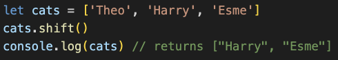 | Learn More |
| pop() | pop() removes the last element from the end of an array and returns that element. If you then log the array it will show the last element is now removed. | 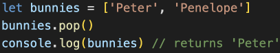 | Learn More |
| join() | join() returns a new string by concatenating (adding) all of the array's elements that are separated by a specified seperator. | 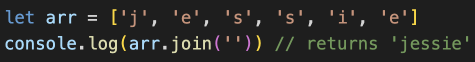 | Learn More |
| sort() | sort() is used to arrange/sort an array's elements in either ascending or descending order. | 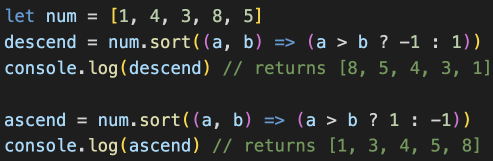 | Learn More |
| find() | find() returns the value of the first element in an array that passes the test in a testing function. | 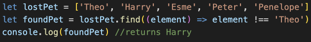 | Learn More |
| reduce() | reduce() renders a single value from an array with multiple elements, by a "reducer" callback function. The reducer walks through the array element-by-element, at each step adding the current array value to the result from the previous step — until there are no more elements to add. | 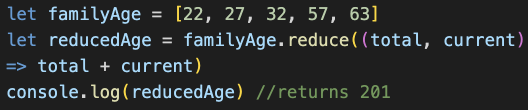 | Learn more |
| slice() | slice() returns a new array with the specified start to end elements. The start element is included in the new array, but not the end element. | 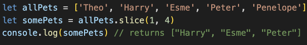 | Learn More |
| includes() | includes() checks if an array includes the element that passes the condition. Returns true or false. | 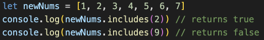 | Learn More |
| some() | some() checks if at least one element in the array passes the condition, returning true or false. | 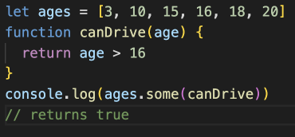 | Learn More |
| unshift() | unshift() adds one or more elements to the beginning of an array and returns the new length of the array. | 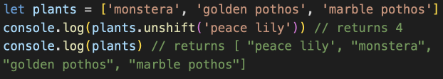 | Learn More |
| concat() | concat() merges two or more arrays and returns a new array, without changing the existing arrays. | 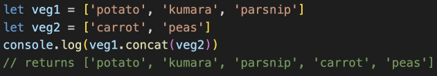 | Learn More |
| every() | every() checks every element in the array that passes the condition. Returns true or false. | 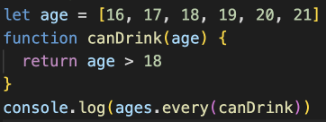 | Learn More |
| forEach() | forEach() helps to loop over arrays by executing a provided callback function for each element in an array. Can be an alternative to for loops. | 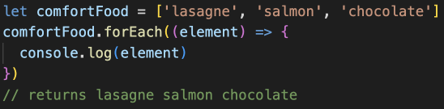 | Learn More |
| findIndex() | findIndex() returns the index of the first element in an array that passes the test in a testing function. | 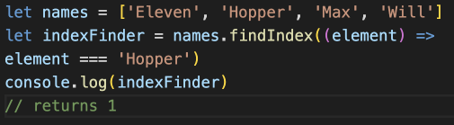 | Learn More |
| indexOf() | indexOf() returns the index of the first occurance of the specified element in the array, or -1 if not found. | 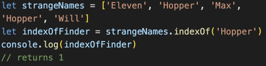 | Learn More |
| push() | push() adds one or more elements to the end of an array and returns the new length of the array. | 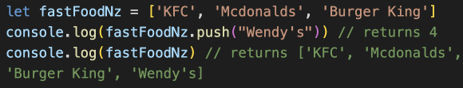 | Learn More |
| map() | map() creates a new array with the results of calling a provided function on every element in the array. | 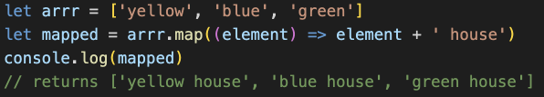 | Learn More |
| reverse() | reverse() reverses an array in place. The element at the last index will be the first and visa versa. | 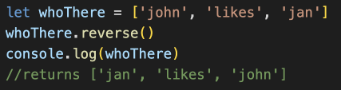 | Learn More |
| filter() | filter() creates a new array with only elements that pass the condition inside the provided function. | 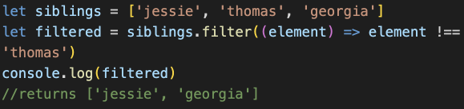 | Learn More |
| fill() | fill() fills the elements in an array with a static value and then returns the modified array. | 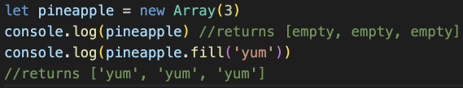 | Learn More |